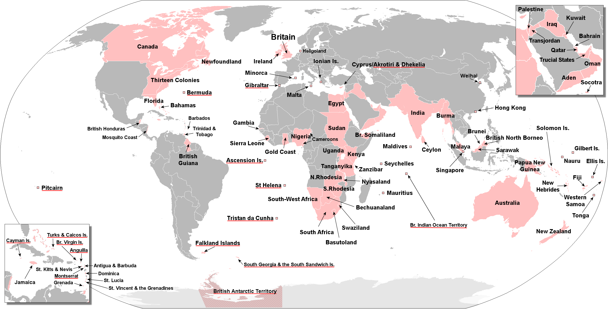

大国崛起
Table of Contents
1 时间表
| 欧洲 | 美洲 | 亚洲 | |
|---|---|---|---|
| 1066 | 【英】William I 加冕，英国引入封建制度 | ||
| 1143 | 【葡】独立 | ||
| 1185 | 【日】幕府时代开始 | ||
| 1215 | 【英】英王与贵族签订《大宪章》，王权受到法律限制 | ||
| 【英】国会成立 | |||
| 1241 | 火药通过蒙古人传入欧洲 | ||
| 1337 | 英法「百年战争」开始 | ||
| 1348 | 黑死病 | ||
| 1380 | 【荷】发明处理和保存鲱鱼的方法【gibbing】 | ||
| 1401 | 【意】「文艺复兴」发源 | ||
| 1405 | 【中】郑和一下西洋 | ||
| 1406 | Ptolemy 的《Geography》被翻译为拉丁文 | ||
| 1433 | 【中】郑和七下西洋 | ||
| 1434 | 【葡】Eanes 越过 Boujdour | ||
| 1450 | 《古腾堡圣经》开始印刷 | ||
| 1451 | 【葡】Caravel 帆船兴起 | ||
| 1453 | 英法「百年战争」结束 | ||
| 1487 | 【葡】Dias 到达好望角 | ||
| 1492 | 【西】西班牙王国成立，「收复失地」运动结束 | ||
| 【西】Columbus 发现新大陆 | |||
| 1494 | 葡西签订协议，划分利益范围 | ||
| 1498 | 【葡】da Gama 抵达印度，开始香料贸易 | ||
| 1519 | 【西】Magellan 开始首次环球航行 | 西班牙人发现阿兹特克帝国 | |
| 1521 | 阿兹特克帝国灭亡 | ||
| 1522 | 【西】首次环球航行完成 | ||
| 1526 | 西班牙人发现印加帝国 | ||
| 1533 | 印加帝国灭亡，成为西班牙殖民地 | ||
| 1543 | 西班牙国王 Felipe II 获得荷兰统治权 | ||
| 1558 | 【英】Elizabeth I 即位 | ||
| 1568 | 【荷】反抗西班牙统治，「八十年战争」开始 | ||
| 1580 | 【英】德雷克完成环球航行，带回巨额利润 | ||
| 1581 | 【荷】七省联合，宣布独立 | ||
| 1588 | 英国击败西班牙「无敌舰队」，海上霸权向英国转移 | ||
| 1600 | 【荷】发明 Fluyt 帆船，降低运输成本 | ||
| 1602 | 【荷】东印度公司成立，开始垄断亚洲贸易 | ||
| 1609 | 【荷】阿姆斯特丹股票交易所、银行成立 | ||
| 1623 | 【英】James I 颁布《专利法》，保护专利权 | ||
| 1624 | 荷兰人建立新阿姆斯特丹【纽约】 | ||
| 1641 | 【日】锁国，长崎为唯一国际贸易港 | ||
| 1642 | 【英】Charles I 与国会爆发战争，「英国内战」 | ||
| 1644 | 【中】清军入关，明朝灭亡 | ||
| 1648 | 各国签署《威斯特伐利亚和约》，「民族国家」开始成型 | ||
| 【荷】西班牙承认荷兰主权，「荷兰共和国」正式成立 | |||
| 【德】进入封建分裂时代，中央权力消失 | |||
| 1649 | 【英】Charles I 被判死刑，英格兰成立共和国 | ||
| 1650 | 「启蒙运动」开始 | ||
| 【荷】东印度公司贸易额占全世界的一半 | |||
| 1652 | 「英荷战争」 | ||
| 1653 | 【英】Cromwell 解散议会 | ||
| 1654 | 【荷】承认英国《航海条例》，海上贸易开始衰退 | ||
| 1661 | 【法】Louis XIV 亲政，建立「绝对君主制」 | ||
| 1662 | 【中】康熙即位 | ||
| 1687 | 【英】Issac Newton 出版《自然哲学的数学原理》 | ||
| 1688 | 【英】荷兰国王 William III 进行「光荣革命」 | ||
| 1689 | 【英】William III 签署《权利法案》 | ||
| 【英】君主专制结束，开始建立「君主立宪制」 | |||
| 1763 | 「七年战争」结束，英国确立世界强国地位 | ||
| 1764 | 【英】James Hargreaves 发明「珍妮纺纱机」 | ||
| 1769 | 【英】James Watt 改良工业蒸汽机 | ||
| 1776 | 【英】Adam Smith 出版《国富论》，奠定资本主义的基础 | 【美】殖民地代表签订《独立宣言》 | |
| 1783 | 【美】英国签订《巴黎条约》，承认美国独立 | ||
| 1789 | 【法】Louis XVI 召开「三级会议」 | ||
| 【法】「法国大革命」，绝对君主制结束 | |||
| 【法】国民制宪会议颁布《人权和公民权宣言》 | |||
| 1792 | 【法】「法兰西第一共和国」成立 | ||
| 1799 | 【法】「雾月政变」，Napoleone 执政 | ||
| 1804 | 【法】Napoleone 被选举为皇帝，「法兰西第一帝国」建立 | ||
| 【法】Napoleone 颁布《民法典》 | |||
| 1806 | Napoleone 入侵德国，「德意志神圣罗马帝国」解体 | ||
| 1807 | 【美】Robert Fulton 首次使用蒸汽机驱动轮船 | ||
| 1814 | 【德】「维也纳会议」，「德意志联邦」成立 | ||
| 1815 | 「滑铁卢战役」，反法同盟击败 Napoleone | ||
| 1830 | 【英】George Stephenson 建造蒸汽火车和第一条铁路 | ||
| 1834 | 【德】「德意志关税同盟」成立，日耳曼邦国经济整合 | ||
| 1837 | 【英】Queen Victoria 即位 | ||
| 1840 | 【中】「第一次鸦片战争」 | ||
| 1848 | 「民族之春」 | ||
| 【德】中产阶级议会建立统一的「德意志帝国」的尝试失败 | |||
| 1850 | 【英】城市人口超过 60%，煤、铁、棉布产量占世界一半以上 | ||
| 【英】新增殖民地的回报率开始降低 | |||
| 1851 | 【英】伦敦「万国博览会」召开 | 【日】「黑船来航」，美国要求日本开国 | |
| 1853 | |||
| 1862 | 【德】Bismarck 就任普鲁士王国首相 | ||
| 1868 | 【日】明治天皇废除幕府，建立维新政府 | ||
| 1870 | 「普法战争」 | 【日】「三菱公司」成立 | |
| 1871 | 【德】Wilhelm I 加冕，「德意志帝国」成立 | 【日】「岩仓使团」出访欧美 | |
| 1875 | 【法】「法兰西第三共和国」建立，政治趋于稳定 | ||
| 1878 | 【日】极端西化导致社会矛盾激化 | ||
| 【日】大久保利通被刺杀，伊藤博文继任「内务卿」 | |||
| 1888 | 【德】Wilhelm II 即位，对外关系开始恶化 | ||
| 1889 | 【日】《帝国宪法》颁布，「帝国议会」成立 | ||
| 【日】军国主义复苏，开始通过战争进行发展 | |||
| 1894 | 中日「甲午战争」 | ||
| 1904 | 「日俄战争」 | ||
| 1910 | 【德】工业总量达到欧洲第一 | ||
| 1913 | 【德】超越英国，成为世界第二经济强国 | ||
| 1914 | 第一次世界大战爆发 | ||
| 1922 | 【英】大英帝国达到顶峰，统治地球 25% 的土地和人口 | ||
| 1931 | 日军侵占中国东三省 | ||
| 1937 | 「七七事变」，日本全面侵华 | ||
| 1939 | 第二次世界大战爆发 | ||
| 1941 | 「珍珠港事件」，太平洋战争爆发 | ||
| 1945 | 【日】「明治维新」以来的物质成果几乎全失 | ||
| 1947 | 【日】《和平宪法》颁布，天皇成为象征 | ||
| 1955 | 【日】国民生产总值连续 15 年 10% 左右增长 | ||
| 1964 | 【日】第一条「新干线」通车 | ||
| 1968 | 【日】成为世界第三大经济体 |

Figure 1: 大英帝国顶峰